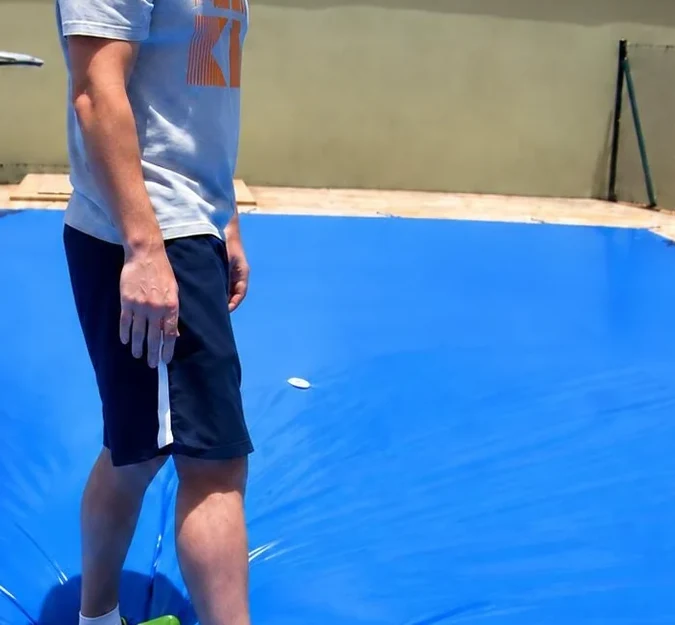

Cubiertas de protección para piscinas
Lonas de polietileno para reducir suciedad, hojas y polvo. Medidas y fijación sujetas a consulta.
Cubiertas para piscinas, mantas térmicas, protección de espacios de ocio y gazebos para distribuidores y compradores B2B.
Lonas de polietileno para reducir suciedad, hojas y polvo. Medidas y fijación sujetas a consulta.

Cubiertas de PVC reforzado y fijaciones según dimensiones y requisitos técnicos.

Cubiertas térmicas con burbujas para ayudar a retener el calor y reducir la evaporación.

Carpas plegables y cerramientos laterales para ocio, eventos y jardines.
Indique categoría, medidas, forma, material, espesor, color, accesorios, cantidad, destino y aplicación.
Las cubiertas térmicas, de protección y de seguridad tienen funciones diferentes. No se debe presumir resistencia al peso sin verificación técnica.
Fotografías originales sin logos. Precio, disponibilidad y condiciones sujetos a confirmación.